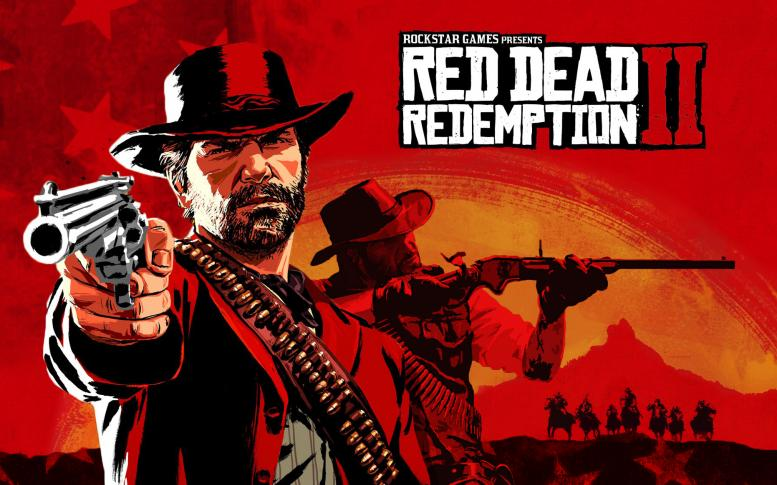
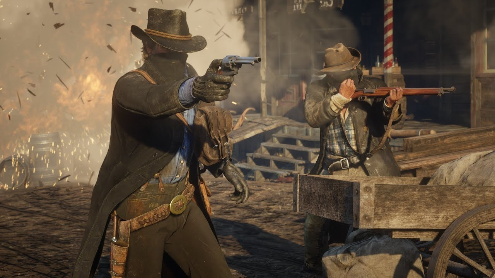

Red Dead Redemption 2
by Myagkiy Gleb
Posted on Mart 12, 2019 at 10:00 PM
Действие Red Dead Redemption 2, оформленной в духе вестерна, происходит в 1899 году на Диком Западе, на территории нескольких вымышленных штатов США. Сюжет игры построен вокруг приключений банды Датча Ван дер Линде; под управлением игрока находится Артур Морган, один из членов банды. После неудачного ограбления банка бандиты вынуждены скрываться в глуши от федеральных агентов и охотников за головами. Red Dead Redemption 2 предлагает игроку свободно путешествовать по обширному миру игры, самостоятельно находя интересные места и занятия — к числу таких возможных занятий принадлежат перестрелки, ограбления, охота на диких животных и скачки на лошадях. Особая система «чести», учитывающая как достойные, так и преступные поступки игрока, влияет как на сюжет игры, так и на геймплей.
После выхода Red Dead Redemption 2, как одна из самых ожидаемых и широко рекламируемых в это время игр, побила несколько рекордов продаж — лишь за две недели после их начала было продано свыше 17 миллионов копий игры, принеся компании Rockstar свыше 725 миллионов долларов прибыли. Она получила самые высокие оценки прессы — обозреватели удостоили самых высоких похвал сюжет, персонажей, предоставленную игроку свободу и чрезвычайное внимание разработчиков к деталям. По итогам 2018 года игра также собрала ряд престижных наград, в том числе «Выбор критиков» на церемонии Golden Joystick Awards и «Лучшее повествование» и «Лучший саундтрек» на церемонии The Game Awards. Также в 2018 году игра стала лауреатом 22-й ежегодной премии D.I.C.E. Awards — премии Академии интерактивных искусств и наук (Academy of Interactive Arts & Sciences), одержав победу в номинации «Выдающееся техническое достижение».
Игровой процесс Red Dead Redemption 2 является шутером от первого и третьего лица с открытым миром в жанре приключенческого вестерна. Сюжет одиночной кампании повествует о жизни людей и их выживании в непростых условиях центральной части Американского Старого Запада в конце XIX века. В игре очень просторный и тщательно проработанный открытый мир, который стал основой для нового сетевого режима.
 После анонса Red Dead Redemption 2, аналитик из Macquarie Group (англ.)русск. Бен Шехтер предположил, что за первый квартал финансового года, после выхода игры, Take-Two Interactive продаст около 12 миллионов копий игры[104]. За первые три дня продаж игра принесла разработчикам более $ 725 млн.[105] По состоянию на 31 декабря 2018 года было продано 23 миллиона копий игры, что принесло разработчикам $ 1.38 млрд.Шкала чести Как и в предыдущей части, в игре присутствует «шкала чести», определяемая поступками игрока: доброжелательные и благородные поступки (помощь незнакомцам, самоотверженность, щедрость и т. д.) способствуют повышению репутации Артура, сдвигая текущее значение в правый белый ползунок, в то время как неприемлемые и аморальные действия (убийства, дебоши, ограбления, жестокость и т. д.) создают главному герою репутацию отъявленного бандита, сдвигаясь к красному ползунку. Честь является одним из важных аспектов игры, поскольку многие ключевые моменты меняются в зависимости от текущей репутации Артура.
Someone in Gotham
About

Myagkiy Gleb
Age:13